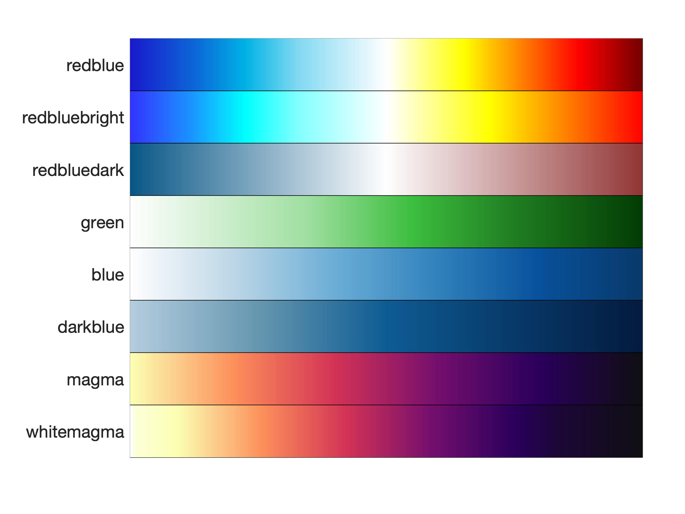
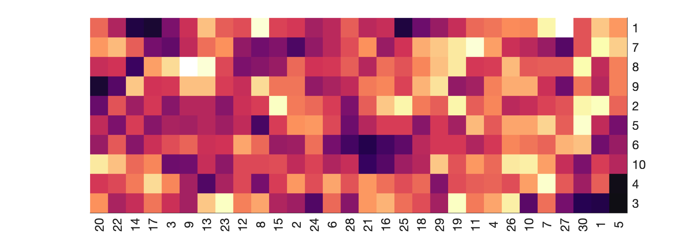

Visualization
A few of the visualization functions in the GSAM package can be used for general purposes (i.e., unrelated to gene set analysis). These functions are described below.
Colormaps
MATLAB does not always have the best color palettes (colormaps) available. We therefore provide the custom_cmap function to allow users to more easily create their own custom colormap, or to choose from several of our own pre-made custom colormaps.
A preview of our built-in custom colormaps is available:
custom_cmap('preview');

Heatmap
The genHeatMap function generates a heatmap for a numeric matrix. The rows and/or columns can be optionally clustered/reordered based on a specified distance metric (e.g., Euclidean, cosine, spearman, etc.).
data = randn(10, 30); % create a matrix of random values for demonstration purposes
genHeatMap(data); % generate heatmap using all defaults

Heatscatter
The genHeatScatter function generates a heatmap for two equally sized matrices, where one matrix defines the cell colors and the other matrix defines the cell sizes (cells are circles rather than squares). The rows and/or columns can be clustered based on the color matrix, the size matrix, or an average of the two matrices (after normalization).
data = randn(10, 30); % create a matrix of random values for demonstration purposes
genHeatScatter(data, data); % generate heatscatter using same data for both size and color